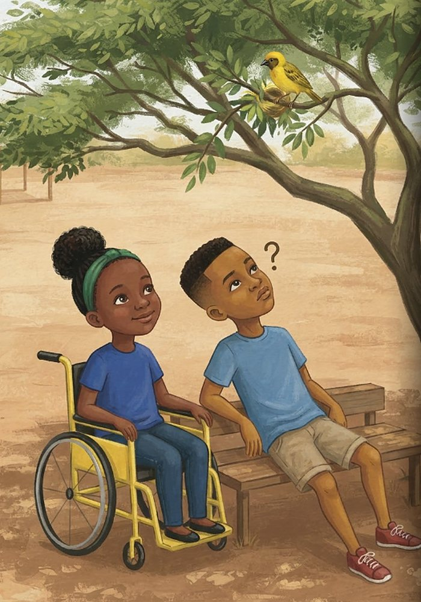
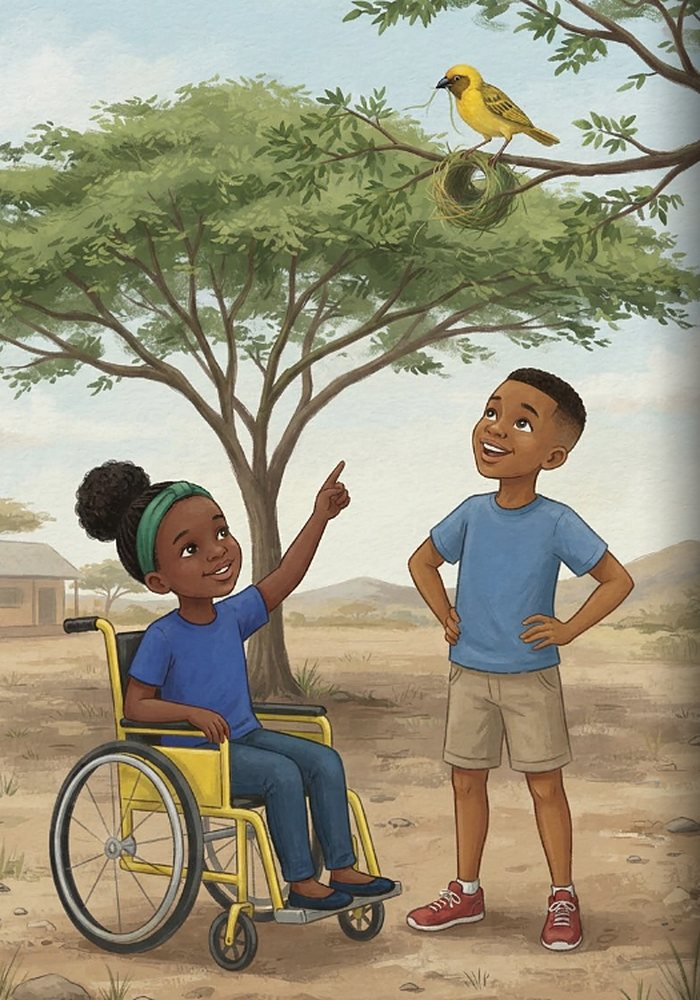
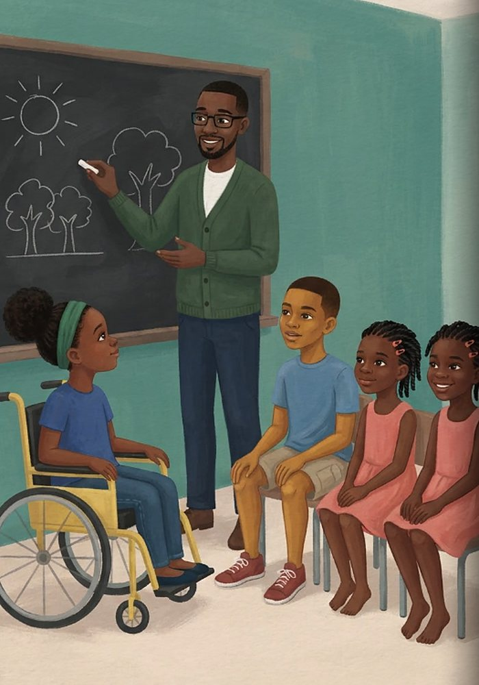
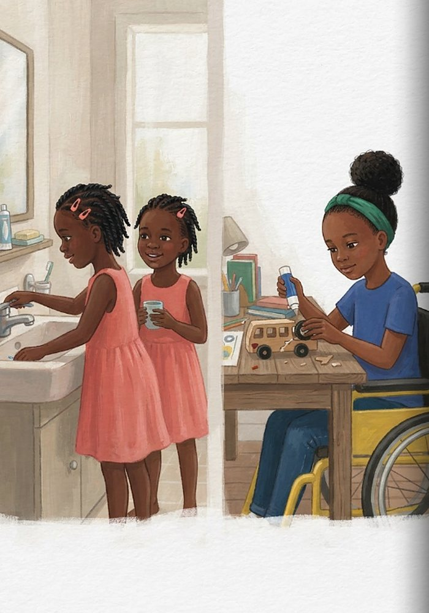
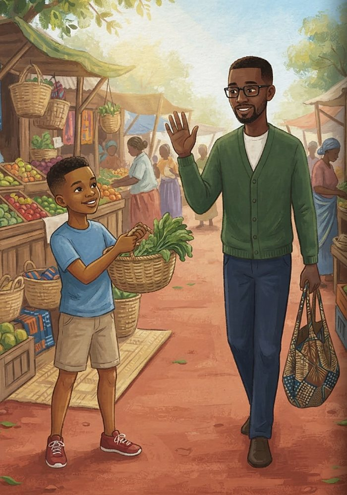
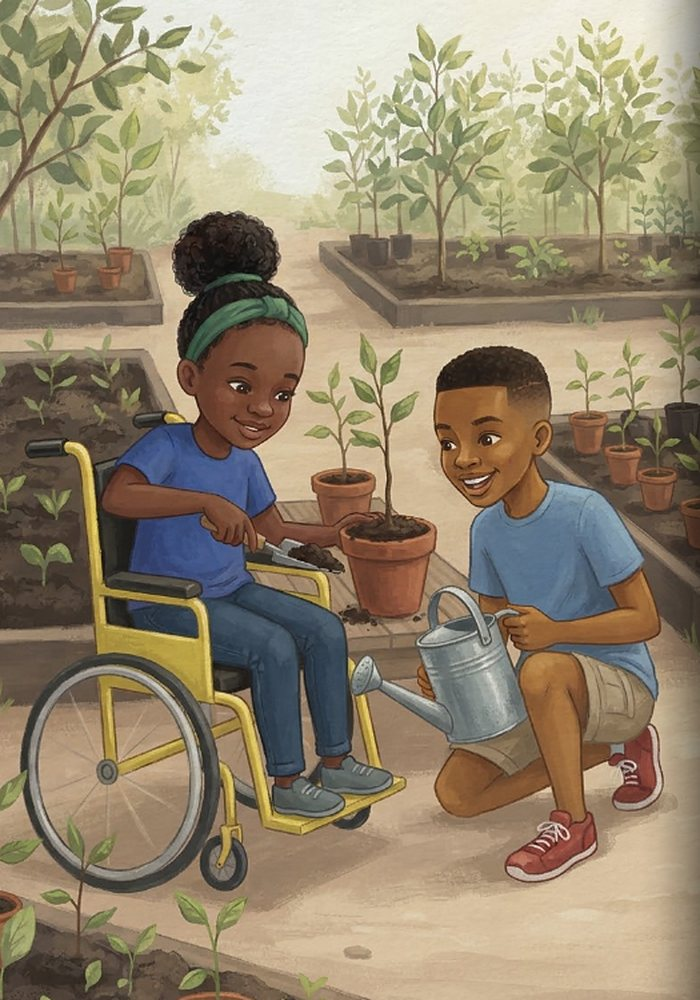
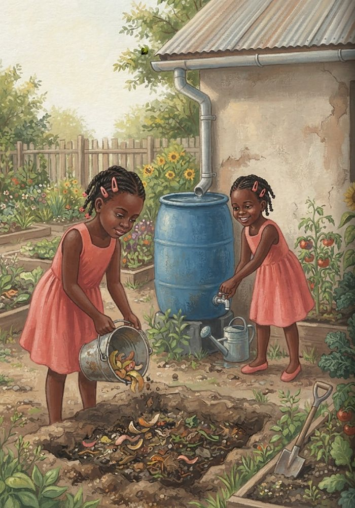
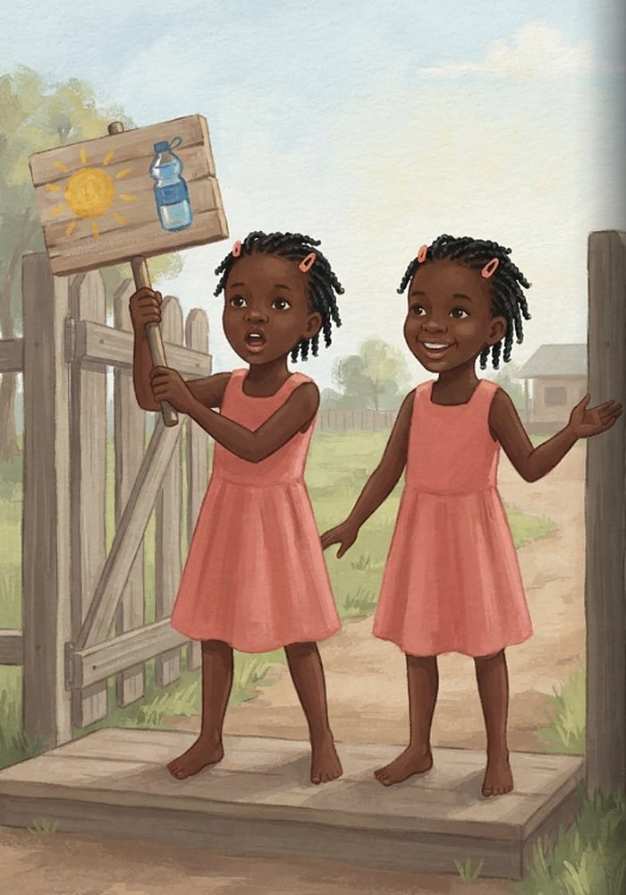
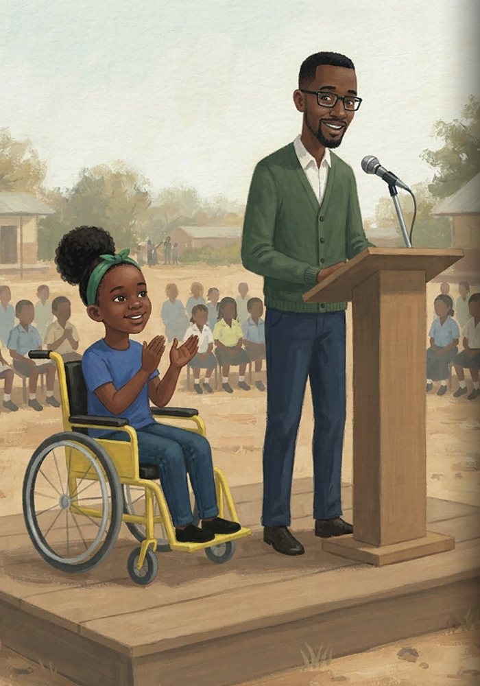
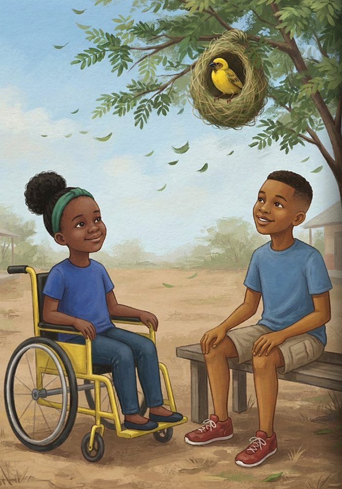

The Little Steps Club
Learn more about climate action
- The two parts of climate action
- Little ways to save energy, water and waste
- How a school can get ready for hot, dry days
- Why working together, pamoja, matters
Kip thinks children are too small to do anything about something as big as climate change. Leila points to a weaver bird building its nest one blade of grass at a time, and starts a club to show how little steps add up to something huge.

At break time, Leila sits in her bright yellow wheelchair under the shade of an acacia tree. Up above, a bright yellow weaver bird works busily on a branch. Kip runs across the yard in his red running shoes and flops down on the bench. “We’re just kids, Leila,” Kip sighs, wiping his forehead. “How can we do anything about something as big as climate change?”

Leila points up at the tiny yellow bird holding a long strand of grass in its beak. “Look at the weaver bird,” Leila says gently. “It doesn’t build a whole nest in one second. It carries one blade of grass at a time. Loop by loop, strand by strand. Soon, the whole tree is full of nests!” Kip looks up, a big grin spreading across his face. “So lots of small steps add up to something huge?” “Exactly,” Leila smiles.

Leila starts ‘The Little Steps Club’! Kip, twin sisters Achieng and Awino, and their teacher Mr Mwangi gather around a chalkboard. Mr Mwangi adjusts his glasses and taps the board. “Climate action has two main parts,” he explains. “First, cutting the pollution that warms our planet—like saving energy and planting trees. Second, getting ready for changes—like saving rainwater for dry times and staying safe in hot weather!”

The club members start taking little steps at home. Kip switches off unused lights and turns off the TV when leaving the room. At their home, twins Achieng and Awino stand together at the sink. “Turn off the tap while brushing!” says Achieng. “…to save every drop!” finishes Awino. Meanwhile, Leila sits at her table carefully gluing the wheel back onto a broken toy bus instead of throwing it away.

On Saturday, Kip goes to the market with his father. Instead of asking for plastic bags, Kip carries a sturdy woven reed basket filled with vegetables. Mr Mwangi walks past holding a fabric tote bag and waves. “Did you know?” Mr Mwangi says, “Kenya banned plastic carrier bags back in 2017 to keep our environment clean!”

At school, the club starts a tree nursery! Mr Mwangi helps lay a smooth, wide dirt path so Leila’s wheelchair can easily roll alongside the garden beds. Leila uses a small trowel to scoop rich earth into pots, while Kip carries a light watering can over to help.

Next to the garden, the club digs a compost pit for lunch leftovers and fruit peels, turning food waste into rich soil. They also attach a rain collection barrel under the school roof drainpipe. “When the dry season comes,” Achieng says, “we’ll have stored rainwater…” “…so our little trees won’t go thirsty!” adds Awino.

To get ready for weather changes, the twins create an Early Warning Board near the school gate. Every morning, they check the sky and temperature. On very hot days, they hold up a bright painted sign at morning assembly. “Drink extra water today!” calls Achieng. “And rest in the shade!” shouts Awino.

Soon, the whole school wants to join in! At assembly, Mr Mwangi steps up to speak. “In 2015, almost every country in the world signed the Paris Agreement, agreeing to work together to slow down global warming,” Mr Mwangi says. “When we work as one, in Kiswahili we say pamoja!” The entire school cheers, “Pamoja!”

Months later, the schoolyard is shaded by growing young trees. Up in an acacia branch, the yellow weaver bird weaves its final blade of grass into a perfect, round nest. Leila, Kip, Achieng, Awino, and Mr Mwangi rest under the breezy leaves, proud of what they built together step by step. Choose one little step for this week, and ask a friend to do it with you!